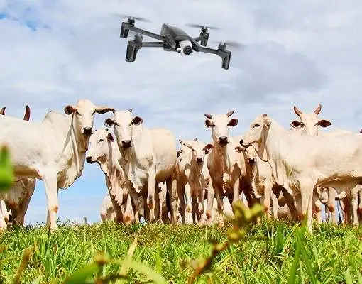
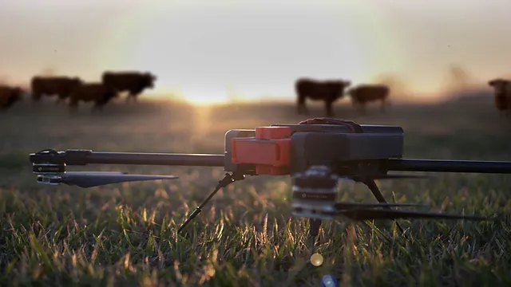

Um pouco de nossa história
A nossa empresa começou quando decimos mudar o jeito de fazer o agronegócio tendo em fundamento a preocupação do meio ambiente e ecônomia para os agropecuários, pois de fato nosso país tem como umas principais fontes de renda o mercado agro isso tendo em mente nos anos 2000 onde surgiu técnologias avançadas em realção da decádas passadas, fundamos a Agrotec.
Possuímos equipamentos e infra- estrutura adequdas para atender famílias, grupos de visitantes e alunos de forma que o desenvolvimento das atividades rurais, de lazer e educacionais sejam bem aproveitadas pedagogicamente
Como o mercado foi se adaptando bem ao nosso produtos e serviços fez com que o nosso sucesso de vendas e satisfações de quem consume nossos produtos e serviços muitas parceiras entre nossos clientes e nossos fornecedores, temos orgulho em trabalhar com nosso nome.
LTem 500 ha de áreas preservadas, protegidas e de produção agropecuária. Composta inicialmente pela fragmentação de diversas pequenas propriedades rurais, trouxe uma singularidade no uso do solo para as atividades rurais, lazer, educação e conservação.
As RPPNs, Cachoeirinha e Rabicho da Serra, unidades de conservação previstas pelo SNUC, somadas às áreas de preservação permanentes, transformaram a Fazenda dos Cordeiros num habitat importante para a diversidade de fauna e flora nativas da Mata Atlântica.